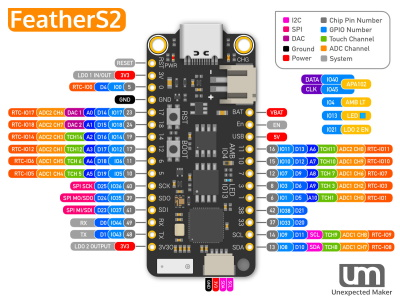

Espressif ESP32-S2 Series
These are the firmware images:
- FEATHER_S2 that fits all ESP32-S2 boards exposing the embedded USB CDC through GPIO19 and GPIO20. These can be FeatherS2, TinyS2 or any other similar hardware with or without PSRAM.
- KALUGA_1 specific for the ESP32-S2-Kaluga-1 Kit. This one includes the UI features and driver for the ILI9341.
You can check Espressif Product Selector for details on all the existing variants, chips, modules and respective development kits.
FeatherS2

TinyS2

ESP32-S2-Kaluga-1 Kit

ESP32-S2-Kaluga-1 Kit Product page
Firmware images (ready to deploy)
| Target | Stable | Preview |
|---|---|---|
| FEATHER_S2 | ||
| KALUGA_1 |
⚠️ To update FeatherS2 and TinyS2 with nanoff the boards need to put in download mode by holding [BOOT], clicking [RESET] and then releasing [BOOT].